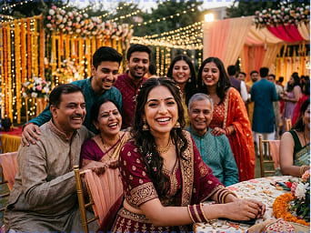

Вам не нужно останавливать жизнь

Работа
«Мне нравилось, что не пришлось проходить через сложные стоматологические процедуры. Улыбка выглядит намного лучше. На работе теперь чувствую себя увереннее.»
Neha — Bangalore
Фотографии
«Раньше на фотографиях я старалась не улыбаться широко и прикрывала рот. Теперь чувствую себя намного увереннее и спокойно улыбаюсь.»
Priya — Mumbai
Свидание
«Раньше я автоматически прикрывала рот, когда смеялась. Теперь просто наслаждаюсь моментом и не думаю о своей улыбке.»
Anjali — Delhi